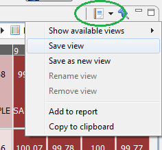
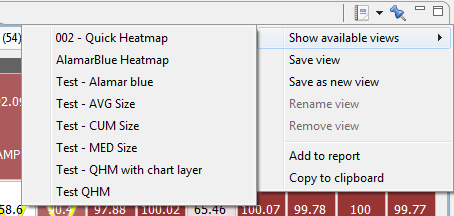
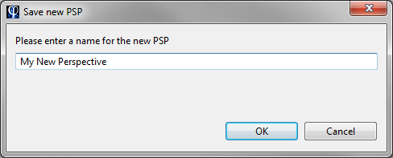
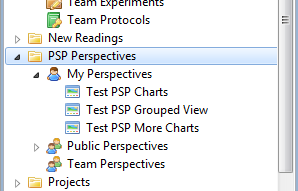
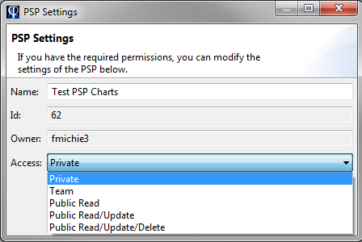

The Phaedra workbench is a flexible window, allowing you to change many aspects of its presentation. While using the application, you will find that many views can be configured in great detail. To avoid having to perform this configuration again and again, Phaedra offers several tools to save this information, so that you can continue working with the same views in different sessions, even on different computers.
There are two aspects of the workbench that can be saved and restored in later sessions:
Both of the above can be combined in a single, powerful concept called perspectives. When you open a perspective, it will bring the workbench in the exact state it was in when you saved the perspective.
When you exit the application, the position of open views will be remembered the next time you start Phaedra.
If you do not want this, click on Window > Reset Perspective. The workbench will return to its original, blank state.
Most views in Phaedra support the notion of saved views. You can quickly see this by the presence of the saved view icon in the view's toolbar.

When you click on the icon, a menu will appear allowing you to save and load views. To save a view, select Save as new view and enter a unique name for the saved view.
From now on, that saved view will be available to you on any computer you use. Open the view, click on the saved view button and select Show available views to see a list of saved views that are available to you.

When you select one of the saved views, the view will immediately return to the state it was saved in.
If you have composed a workbench with many views and spent time configuring each view to a specific state, you can save all this information in a single 'snapshot', called a perspective. This is most useful if you plan on reusing the same workbench layout later, over multiple sessions.
To create a perspective, right-click on the item PSP Perspectives in the Navigator view, and select Save As New.... You will be prompted to enter a unique name for the new perspective.

Once the perspective has been saved, it will be available at any time, on any computer. To open it, double-click on PSP Perspectives > My Perspectives in the Navigator view. Right-click on the perspective you want to restore and select Open.

By default, the perspective will be private, meaning only you can see and open it. To share a perspective with other users, right-click on it and select Settings. In the settings dialog, you can change the name of the perspective, and the access level.

If you want to modify a perspective, follow these steps: